DFMPro の［詳細の確認］機能を使用すると、ユーザーはパーツ上の重要な領域を画像としてキャプチャし、生成されるレポートに自動的に追加することができます。
対象のインスタンスの詳細を確認するには、Instance を右クリックし、 Review Details オプションを選択します。
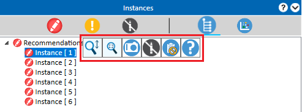
［詳細の確認］ダイアログボックスで、 Capture Image アイコンをクリックし、グラフィックスエリアに表示されている画像をキャプチャします。
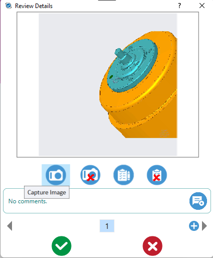
ユーザーは、グラフィックスエリアで必要に応じてズーム／パン／向きを変更し、その後 Capture Image アイコンを使用して再度画像をキャプチャできます。以前にキャプチャされた画像は、新しく調整された画像に置き換えられます。
Delete Instance Image アイコンを使用して既存の画像を削除し、新しい画像をキャプチャすることもできます。
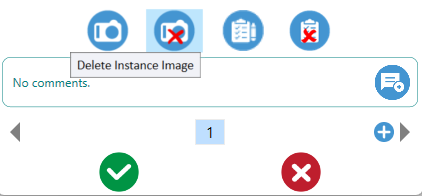
ユーザーは、事前定義されたコメントをファイル内で構成できます。 View Comment をクリックすると、標準コメントを追加・保存できる .dat ファイルが表示されます。
コメント欄に類似する単語を入力すると、標準コメントを直接利用できます。
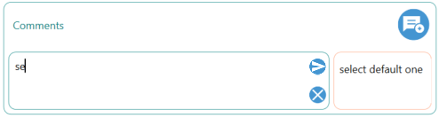
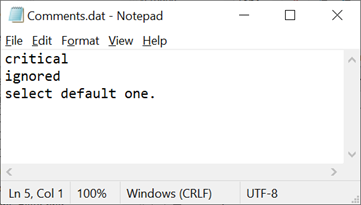
［コメント］ボックスでは、必要なメッセージやコメントを追加、編集、削除することができます。DFMPro では、既存のコメントに対して設計者が返信することも可能です。
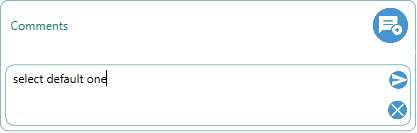
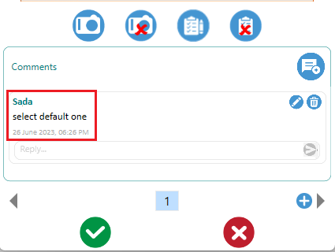
編集後、時刻は現在の日付と時刻に更新されます。
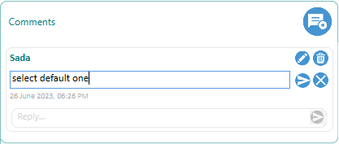
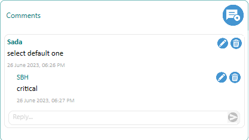
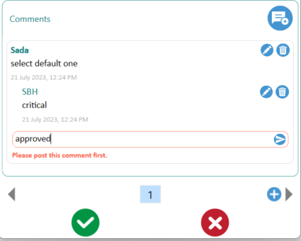
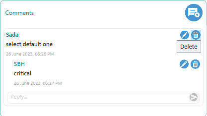
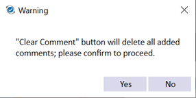
同じ不良インスタンスに対して複数の画像をキャプチャし、コメントを追加するには、「+」 ボタンをクリックして次の番号タブを追加します。別の不良インスタンスについても同じ手順を使用して、複数の画像とコメントをキャプチャできます。
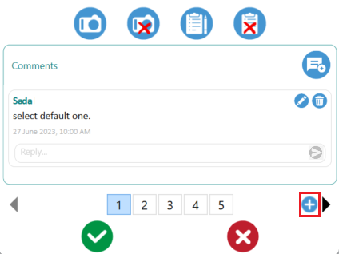
不要な番号タブを右クリックし、コンテキストメニューから Delete オプションを選択すると、不要なキャプチャ画像およびそのコメントを削除できます。
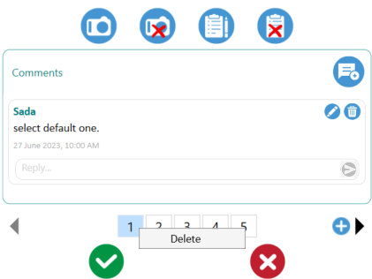
以前にキャプチャした画像を再確認したい場合、すでに選択されているルールインスタンスをクリックします。保存された画像および追加されたコメント（ある場合）がダイアログボックスに表示されます。
OK ボタンをクリックして、キャプチャした画像を保存し、［詳細の確認］ダイアログボックスを閉じます。インスタンスのアイコンが変更され（以下のインスタンス 3 および 4 を参照）、これらのインスタンスに画像がキャプチャされていることが強調表示されます。
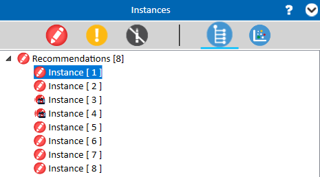
インスタンスに対して画像、コメント、またはその両方が削除された場合、そのインスタンスからアイコンは消えます。
［詳細の確認］ダイアログボックスを閉じるには、検証中に OK、Close、または Cancel ボタンをクリックします。
OK ボタンをクリックすると、キャプチャされたデータが保存されます。ただし、Cancel または Close ボタンをクリックした場合は、警告メッセージが表示されます。
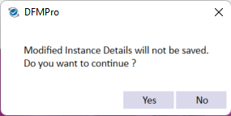